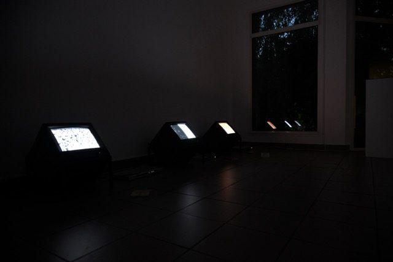
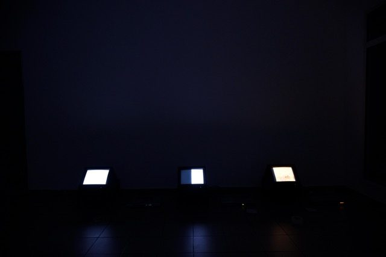
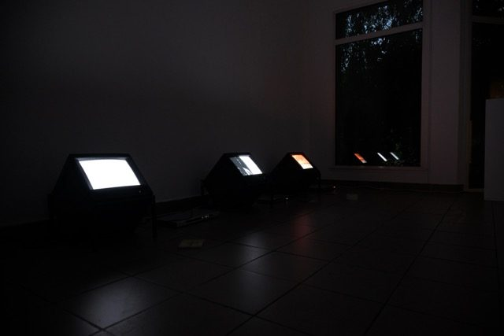
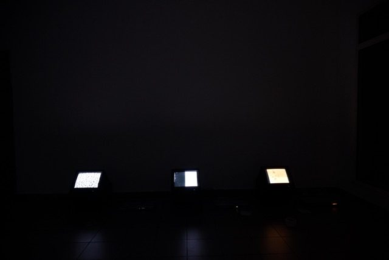

DOSSIER 112THÈME 110 : Matérialité de l'image
Le bruit de l'eau
L'eau est le milieu dans lequel la vie s'est transformée. Elle rend possible l'émergence des formes. Dans cette vidéo, l'intelligence artificielle est envisagée selon une logique similaire : une entité de données au sein de laquelle des images naissent.
En manipulant les paramètres de cette matrice numérique par un travail de méta-prompting, le processus de génération est progressivement détourné. Alors même que l'eau est demandée à l'image, elle est poussée à se décomposer de plus en plus, jusqu'à faire émerger du bruit. L'image quitte alors la représentation pour révéler sa matière première : un flux instable, où l'eau finit par se confondre avec le signal. Un travail de texte accompagne cette dérive, entre apparition et disparition.
- ANNÉE
- 2026
- MÉDIUM
- vidéo, dispositif cathodique, lecteur DVD
- DIMENSIONS
- variables
- EXPOSÉ
- « 5D », Frac Normandie, 2026–2027

[112.01] image source

[112.02] vue 01

[112.03] vue 02

[112.04] vue 03

[112.05] vue 04